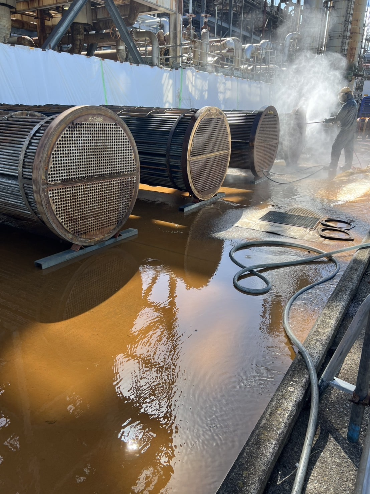
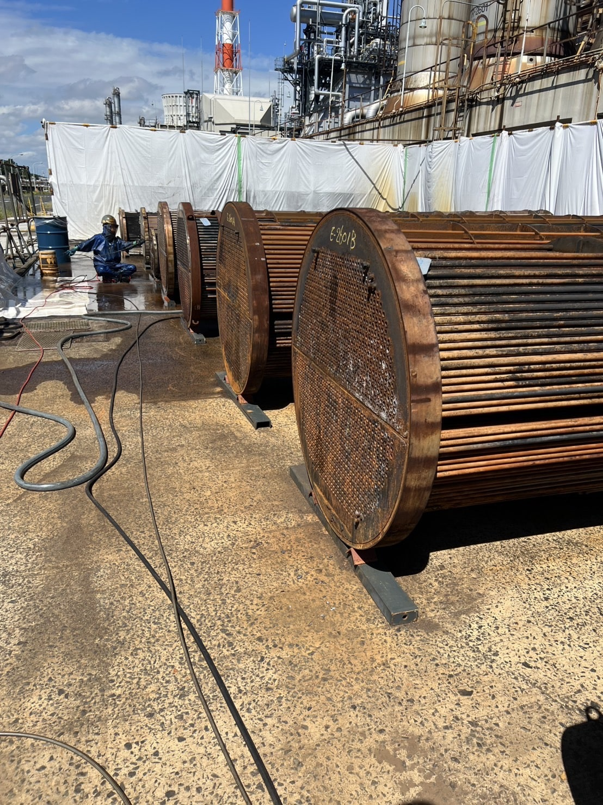
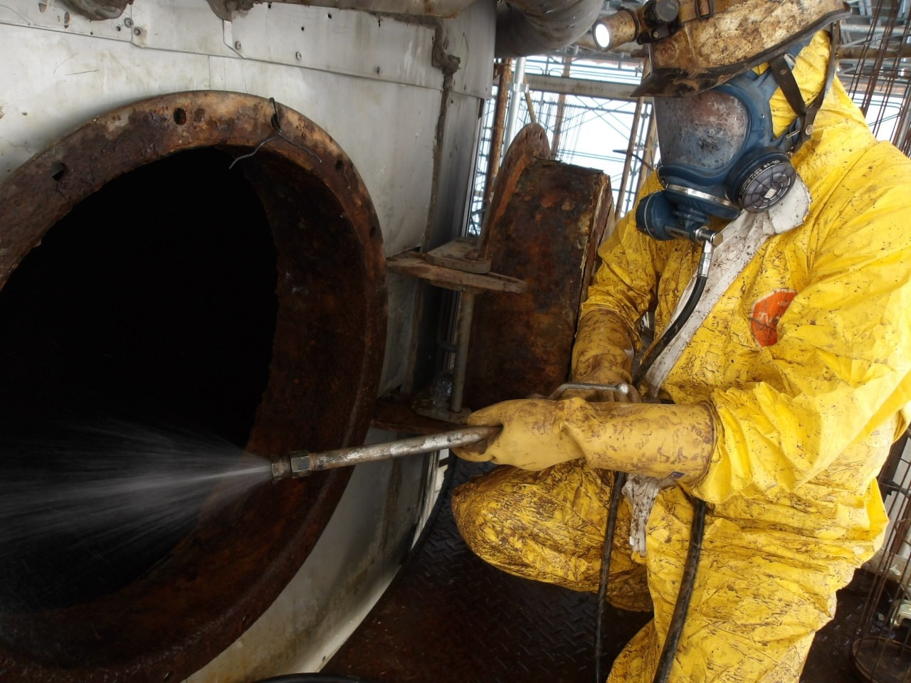
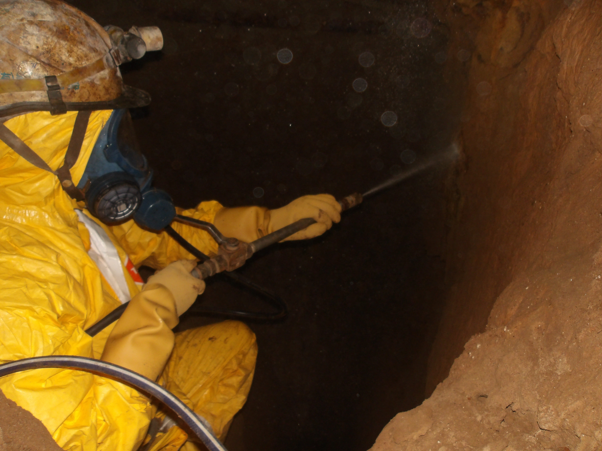

製紙工場・石油工場・化学工場をメインに高圧洗浄機を使って洗浄工事を行ないます。作業は有資格者が行い、安全で高品質な仕上がりを提供します。


解体時に発生するダイオキシン類を高圧洗浄機で除去します。環境と人体への影響を最小限に抑えた作業を行い、適正な保護具、機材を使用して、安全に除染作業を進めます。


外壁や床面の洗浄を行い、耐久性向上と美観を保ちます。環境に優しい洗剤を使用し、リーズナブルに仕上げます。